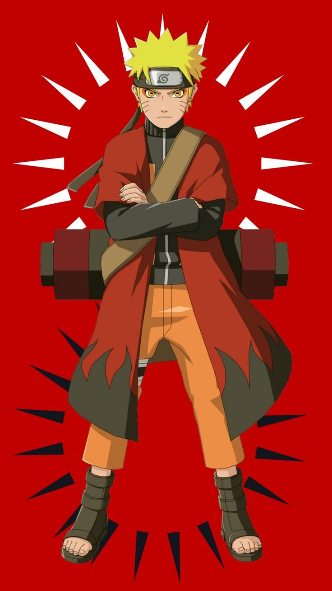

Naruto Uzumaki es un ninja de la Aldea de la Hoja. Desde pequeño fue rechazado porque tenía dentro de él al Zorro de Nueve Colas (Kurama). A pesar de todo, nunca se rindió y luchó por su sueño de convertirse en Hokage.
⬅ Anterior Siguiente ➡